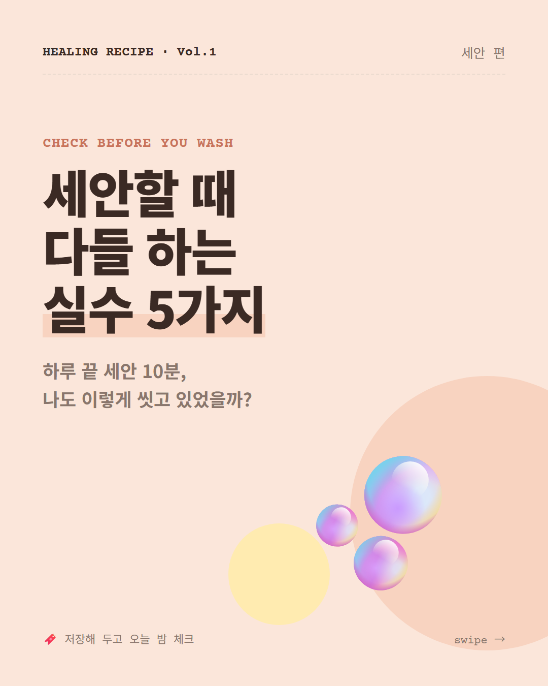
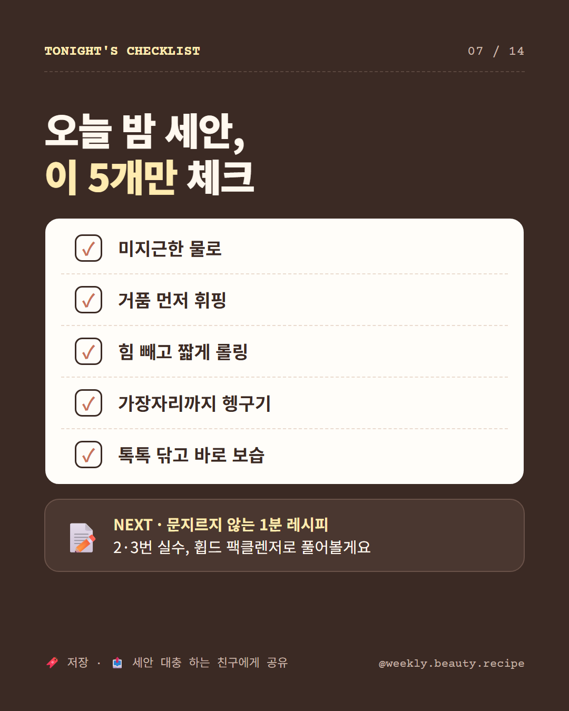
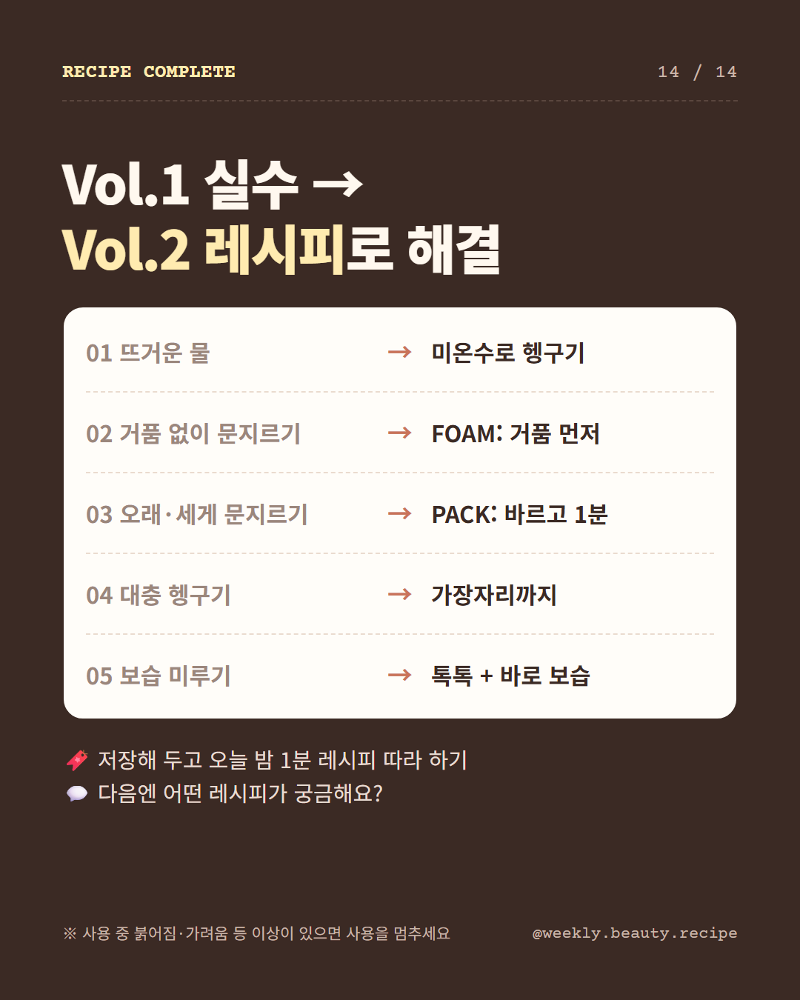

휩드 지원을 위해 만든 스킬 두 개와, 그 스킬이 꺼내 쓰는 내 포트폴리오를 한 장에 정리한 나만 보는 페이지.
설문에서 배운 것("사람들은 광고보다 후기를 믿는다")을 그대로 스킬 규칙으로 옮겼다. 헷갈리면 여기로 돌아오기.
아이디어는 고객이 실제로 쓴 말에서 출발한다. 리뷰 50개 이상, 채널 2곳 이상.
← 설문: 숏폼 보는 이유 1위 '제품 후기' 49%항상 "N개 중 M개(○%)". 모르는 수치는 만들지 않고, 추측은 "(추정)".
← 연구에서 표본 한계를 결론에 적었던 습관장점 나열 대신 "왜 안 사지?"를 먼저 찾는다. 불만 리뷰 = 기회.
← 미구매 25명 중 17명이 '불신'페르소나 → 카드뉴스 → 캠페인 → KPI까지. 면접에서는 그걸 내 말로 방어한다.
← LUMORA 회고: 감성만으론 '왜 지금'이 약했다단계 카드를 누르면 입력·산출물·지킬 규칙이 보이고, 그 결과를 받아 쓰는 다음 단계가 점선으로 표시된다.
자주 쓸 요청을 골라 보면, 어떤 스킬의 어느 단계가 돌고 무엇이 남는지 보인다.
포트폴리오의 휩드 제안을 근거(E) → 해석(I) → 메시지(M) → 결과물로 다시 쪼갰다. 오른쪽 결과물을 눌러 사슬을 따라가 보기. 노란 점선이 스킬로 검증해야 할 고리.
면접 스킬 1단계가 읽는 것들. 각 카드 아래에 "어디에 쓰이나"를 적어 뒀다.
100명 중 49명. 사용법 26 · 트렌드 20 · 재미 5
100명 중 75명. 구매 이유 1위 '좋아 보여서'(44/75)
효과·품질 불신 10 + 광고 같아서 7



면접 스킬이 만들어 줄 결과물의 뼈대를 내 재료로 미리 채워 본 초안. 외우지 말고 키워드만 기억하기.
패스 다시 힌트 종료 자기소개 즉석과제포트폴리오의 회고를 스킬 규칙으로 옮긴 기록. 아래 체크리스트는 이 브라우저에만 저장된다.